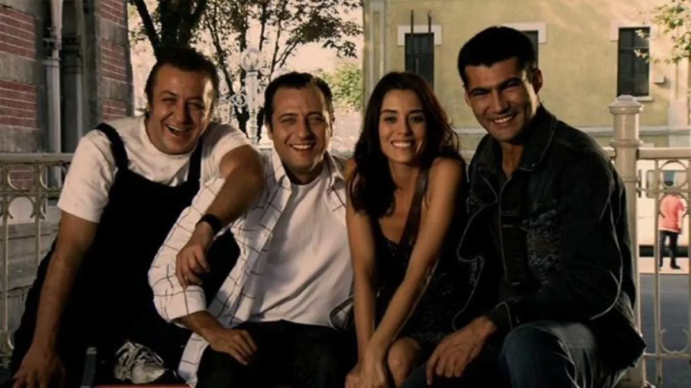
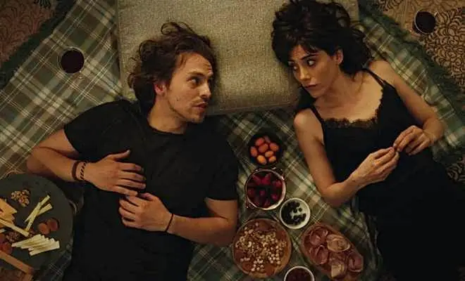
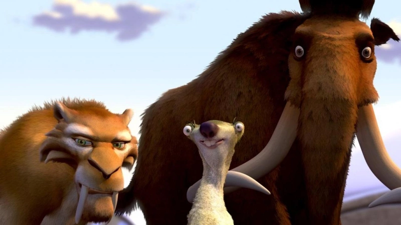

İLGİ ALANLARIM
- Bilgisayar Oyunları
- League of Legends
- Need For Speed
- Need For Speed
- Assassins Creed
- Diziler
- Ezel 
- Şahsiyet 
- 11.22.63
- Filmler
- Ice Age 
- Iron Man >
- 17 Again
Yaklaşık 7 sene aktif olarak oynadım ama şu an oynamıyorum.Çocukluğumun geçtiği oyun diyebilirim
Serinin çoğu oyununu oynadım ve bitirdim.Oynadığım en iyi oyun serilerinden birisidir.
Hala aktif olarak oynamaya devam ediyorum.Gerçeğe çok yakın bir menejerlik oyunudur.
Serinin çoğu oyununu oynadım. Grafikleriyle haz seviyesini yükseklere çıkarabilen güzel bir seri.
imdb
Özet
Ömer Uçar,bir tamirhanede çırak olarak çalışmakta ve ailesiyle birlikte mütevazı bir hayat sürdürmektedir. Babası Mümtaz Bey marangoz ve aile şerefine çok dikkat eden, dürüstçe yaşamayı kendine ilke edinmiş bir insandır. Annesi Meliha Hanım görme engelli ama sezgileri çok kuvvetli bir kadındır.Ömer etrafındakilere çok çabuk inanan ve güvenen birisidir.Tamirhanedeki abisi saydığı Kerpeten lakaplı Ali ve çocukluk arkadaşı Cengiz en yakın arkadaşlarıdır. Ve bir de uğruna canını verebileceği, âşık olduğu Eyşan'ı vardır. Bu üç arkadaş bir gün Ömer'e ihanet eder ve Ömer cezaevine girer; burada karşısına Ramız Dayı lakaplı bir adam çıkar. Ezel (Kenan İmirzalıoğlu), ilk sezonun sonunda eski arkadaşlarını yeterince cezalandırdığına inandıktan sonra gerçek kimliğini açıkladı. Bununla birlikte, ikinci bir olay örgüsü öne çıkmaya başladı ve birinciyle iç içe geçti. Ramiz Karaeski'den daha güçlü biri ortaya çıktı: Kenan Birkan.Ayrıca Ramiz ve Kenan'ın 30 yıl önce birbirlerinin en iyi dostları olduğu ve ortak aşkları Selma Hünel yüzünden acı bir şekilde ayrı düştükleri de ortaya çıktı. Ramiz dayının Ezel'i oğlu gibi gerçekten sevmesine rağmen onu yetiştirmesinin bir nedeni de Kenan'la savaşmasına yardım edecek iyi ve güvenilir bir sağ kolu yaratmaktı.
imdb
Özet
Agah, adli katip memurluğundan emekli olan bir adamdır. Beyoğlu'nda münzevi bir yaşam süren Agah'ın hayatı, kendisine alzheimer teşhisi konulmasıyla altüst olur. Tüm anılarını zamanla unutacak olmasının acısı karşısında büyük bir yıkıma uğrayan Agah, bir süre sonra bu durumun bir fırsat olduğunu fark eder. Agah, yıllardır ertelediği bir cinayeti işleminin tam zamanı olduğunu düşünür çünkü hastalığından dolayı işleyeceği suçu unutacak ve bundan dolayı vizdan azabı çekmeyecektir. Agah'ın aldığı bu karar sadece onun değil cinayet büro amiri olan Nevra'nın da hayatını etkileyecektir.

imdb
Özet
Jake Epping, zamanda geri giderek 22 Kasım 1963 tarihinde John F. Kennedy suikastı önlemek isteyen sıradan bir lise öğretmenidir. Yaptığı bu yolculuk sonrasında 3 yıl kadar geçmişte yaşaması gerekir. 20. yüzyılda hala büyük bir merak konusu olan JFK suikastini önlemeye çalışacaktır.Ancak geçmiş onu hep geri itecektir.
imdb
Özet
Havalar soğumaya başlamıştır ve buzul çağı yaklaşıyordur. Bütün hayvanlar soğuktan korunmak için güneye göç ederler. Sadece mamut Manfred soğuk olan kuzeye doğru gider. Soğuk nedeniyle güneye göç etmek isteyen hayvanlardan biri de miskin Sid'dir. Miskin Sid uyuduğu ağaçta uyandıktan sonra ailesiyle birlikte göç etmek ister.Ama kalktığında ailesini bulamaz, çünkü ailesi her sene yaptıkları gibi yine Sid'i terk etmişlerdir.

imdb
Özet
Babası Howard Stark, Stark Endüstrileri'nin kurucusudur. Babası süper asker projesinde yer almış, Ajan Carter ve Steve Rogers (Kaptan Amerika) ile çalışmıştır. Kaptan Amerika'ya kalkanını babası vermiştir. Ünlü bir mucit ve milyarder olan Tony Stark, Stark Endüstrileri adlı babasından kalan şirketin başına geçer ve silah üretimine başlar. Silahlardan para kazanır ve insanların kanına girer. Bu durum Tony Stark'ı insanlara karşı sorumlu hissetmesine neden olur. Babasının ve kendisinin iş ortağı olan Obadiah Stane'nin gizli bir iş birliği ile Afganistan'daki bir terör örgütü Tony Stark'a bir suikast düzenler. Bu suikastte Stark'ın vücuduna şarapnel parçaları girer. Özellikle kalbi büyük hasar görür. Tony Stark'ın ölmemesi için Yinsen isimli bir cerrah Tony'nin göğüsüne bir çeşit mıknatıs yerleştirir ve Tony'nin ölümü engellenir. Kendisi de ark-reaktörünü ve o reaktörden güç alan ilk zırhını icat eder ve oradan kaçmayı başarır. Yaptığı ilk zırhı oldukça ilkeldir ve bu zırhı kendisi yönetmektedir. Tony'nin kurtulduğunu öğrenen iş ortağı Obadiah Stane, onu şirketten attırmaya çalışır. Tony, zırhın tasarımını mükemmelleştirerek J.A.R.V.I.S'i zırha dâhil eder. Tony Stark'ın bu zırh içinde hata yapma olasılığı çok düşüktür.İlk olarak kendisine suikast düzenleyen terör örgütünün bir kampını havaya uçurur.
imdb
Özet
1989'da 17 yaşındaki Mike O'Donnell, lise basketbol şampiyonası maçının son çeyreğinde kız arkadaşı Scarlett'ın gebe olduğunu öğrenir. Ancak Mike, kazandıran basket sayısından yalnızca birkaç dakika önce, maçı ve olası üniversite basketbol bursunu Scarlett'ın peşinden gitmek için bırakır ve ona evlenme teklifi eder.Yirmi yıl sonra, Mike hayatını durmuş hâlde bulur. Scarlett, Mike'ın üniversiteden vazgeçmesi yüzünden duyduğu pişmanlığı sürekli ona yüklemesinden dolayı ondan ayrılmış ve onu liseden bilgisayar delisi ve zengin olan en iyi arkadaşı Ned Gold'a taşınmaya zorlamıştır. Mike işinden ayrılır ve lise çağına gelmiş olan çocukları Maggie ve Alex onunla hiçbir şey yapmak istememektedir.
Daha sonra, eski günlerini anmak için lisesine gittiği sırada gizemli bir hademe ile karşılaşması Mike'ı 17 yaşındaki hâline dönüştürür.Gençliğini yeniden yaşaması için verilen şansla, Mike Ned'in oğlu Mark Gold olarak liseye kaydolur ve basketbol bursuyla üniversiteye gitmeyi planlar. Mike çocuklarıyla arkadaş oldukça, görevinin onlara yardım etmek olduğuna inanır. Mike baketbol takımının kaptanı olan erkek arkadaşı Stan kızı Maggie'yi terk edince, onu teselli eder. Mike'ın yardımıyla, Alex Stan'in zorbalığının üstesinden gelir, basketbol takımında Mike'la birlikte yer alır ve istediği kişi kız arkadaşı olur.Mike çocukları sayesinde Scarlett'la zaman geçirir. Kocasının lisedeki hâline dikkat çekici benzerliği Scarlett'ın ilgisini çekmiştir. Mike ilişkinin görünürde uygunsuz olmasına karşın zorlukla Scarlett'a olan arzusuna direnir. Aynı zamanda, Maggie'nin ona karşı duyduğu hayranlığa başkasını sevdiğini söyleyerek direnmektedir.
Mike sonunda Scarlett'ın hayatı boyunca almış olduğu "en iyi karar" olduğunu açıklar ve onunla tekrar birleşmeyi dener; başarısızca ona kendinin aslında kocası Mike olduğunu anlatır. Scarlett ve Mike'ın boşanma duruşması gününde, Mike onu geri kazanmak için son bir girişimde bulunur; Mark olarak Mike tarafından yollanan sözde mektubu okur. Hayatının başlangıcında bir şeyleri yoluna sokamamasının onu o günden beri sevdiği gerçeğini değiştirmeyeceğini belirtir. O çıktıktan sonra, Scarlett mektubun tamamen yazısız olduğunu fark eder ve meraklanmaya başlar. Lisenin bir basketbol maçı sırasında, Mike kendini Scarlett'a ifşa eder. Scarlett bir kez daha koridordan aşağı indiğinde, Mike bir kez daha onun peşinden gitmeye karar verir; fakat önce topu oğluna verir bu sayede burs alabilir. Koridordan inerken Mike tekrar 37 yaşındaki hâline geri döner ve Scarlett'la tekrar birleşirler. Bu sırada, Ned ve Jane çıkmaya başlar ve Mike lisenin yeni basketbol koçu olarak işe başlar.